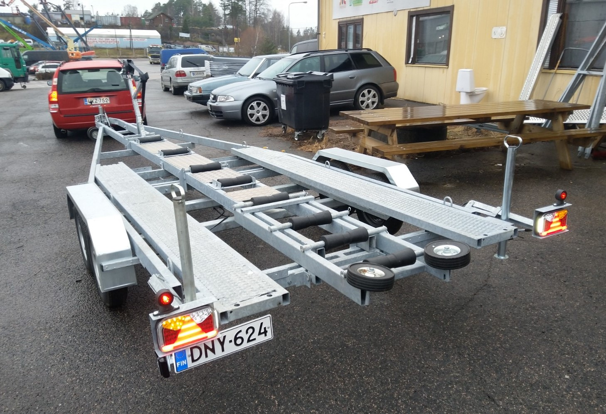
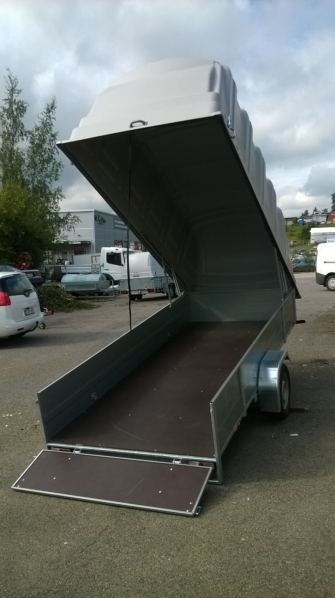

RahtiPro


Kaksoisklikkaa kuvaa suurentaaksesi
Umpivaunut, autotrailerit, lavetit, generaattorialustat, ym. erikoistrailerit valmistetaan mittatilaustyönä.
Valmistamme kaikenlaisia perävaunuja 750-3500 kg väliltä. Erikoisosaamistamme ovat kaiken kokoiset umpivaunut ja venetrailerit (yli 20 vaihtoehtoa). Kaikki perävaunumme rungot ovat upottamalla kuumasinkittyjä ja lujuuslaskettuja. Käyttämämme akselistot, vetopäät yms. ovat markkinoiden parhaita, kuten BPW, KNOTT. Näin pystymme takaamaan vaunujemme turvallisen ja luotettavan käytön vuosiksi eteenpäin.
Pystymme toimittamaan hyvinkin erikoisia ratkaisuja asiakkaan tarpeisiin edulliseen hintaan. Ota rohkeasti yhteyttä meihin, niin räätälöimme sinulle tai yrityksellesi juuri tarpeisiinne sopivan perävaunun.
Perävaunut ja trailerit toimitetaan rekisteröitynä. Hinnat sisältävät ALV:n 24%. Maksuvälinenä käy myös Bitcoin .
VT-750
Mitat: 5850 * 2010
Kokonaispaino: 750 kg
Aisapalkki: 70 x 50 x 3
Runko: 60 x 40 x 2, kuumasinkitty
Sivutuet: 2 kpl
Kippi
Kölirullat: 5 kpl
Vinssi: 7 m liinalla
Renkat: 155 R 13
Vesitiiviit navat
Valosarja: JOKON
Hinta: 1150 € /
VT-1350
Kantavuus: 1350 kg + 100 kg
Omamassa: 370 kg
Pituus: 6,8 – 7,3 m
Leveys: 240 cm
Runko: 80 x 40 x 3 kuumasinkitty
Aisa: 60 x 40 x 3 kuumasinkitty
Sivutuet: 2 kpl, (4 tukipyörää) portaaton säätö tunkilla
7 kölirullaa
Kävelysillat
Ylösnousevat takavalot
Kippi
Renkaat: 185 R 14 C
Akselit ja Vetopää: KNOTT
Valosarja: JOKON
Vinssi: Goliath (myös sähkövinssi)

Hinta: 2495 € /
VT-2000
Kantavuus: 2000 kg
Omamassa: 535 kg
Pituus: 7 - 7,5 m
Leveys: 240 cm
Runko: 100 x 40 x 3 kuumasinkitty
Aisa: 80 x 40 x 3 kuumasinkitty
Sivutuet: 2 kpl, (4 tukipyörää) portaaton säätö tunkilla
9 kölirullaa
Kävelysillat
Ylösnousevat takavalot
Kippi
Renkaat: 185 R 14 C
Akselit ja Vetopää: KNOTT
Valosarja: JOKON
Vinssi: Goliath (myös sähkövinssi)
Hinta: 3695 € /
VT-2700
Mitat: 8500 * 2400
Kokonaispaino: 2700 kg
Runko: 100 x 50 x 3 / 80 x 40 x 3, kuumasinkitty
Aisa: 100 x 50 x 3
Sivutuet: 6 kpl, (12 tukipyörää) portaaton säätö tunkilla
Kuumasinkitty
8 kölirullaa
Kävelysillat
Vahvistetut lokasuojat (voi mennä seisomaan päälle)
Ylösnousevat takavalot
Kippi
Renkaat: 185 R 14 C
Akselit ja Vetopää: KNOTT
Valosarja: JOKON
Vinssi: Goliath (myös sähkövinssi)
Hinta 4395 € /
Venetraileri / autotraileri VT+AT-3500
Mitat: 9350 * 2400
Omapaino: 730 kg
Kokonnaispaino: 3500 kg
Runko: 100 x 50 x 3 / 80 x 40 x 3, kuumasinkitty
Aisa: 100 x 50 x 3
Sivutuet: 6 kpl, (12 tukipyörää) portaaton säätö tunkilla
8 kölirullaa
Kävelysillat
Vahvistetut lokasuojat (voi mennä seisomaan päälle)
Ylösnousevat takavalot
Kippi
Renkaat: 185 R 14 C
Akselit ja Vetopää: KNOTT
Valosarja: JOKON
Vinssi: Goliath (myös sähkövinssi)

Hinta: sopimuksen mukaan /
Perävaunu 35
Lavakoko: 355 x 150 x 45
Kippi kaasujousella 1100 N
Lehtijouset ja iskunvaimentimet
Sidontalenkit ja koukut
Renkaat: 155 R 13
JOKON valosarja, 7-nap. pistoke
Vahvistettu ajosiltatakalaita(kantavuus 450 kg), saranalehdet 37 cm
Irrotettava etu- ja takalaita (kuomu ei tarvitse ottaa irti). Voi kuskata 6 m pitkät laillisesti. Merkitä varoituslipukkeella.
Täysin kuumasinkitty
Vahva runko ja vetoaisa
Pohja: filmi/viira koivuvaneri 12 mm
Paino: 250 kg (kuomulla 320kg)
Kantavuus: 500 kg (430kg)
Suurin teknisesti sallittu kokonaismassa: 825 kg
Lisävarusteet: Takatukijalat, kippiruuvi, LED-valot

Hinta 1395 € /
Perävaunu 35, kuomullinen
Lavakoko: 355 x 150 x 45
Kippi kaasujousella 1100 N
Lehtijouset ja iskunvaimentimet
Sidontalenkit ja koukut
Renkaat: 155 R 13
JOKON valosarja, 7-nap. pistoke
Vahvistettu ajosiltatakalaita(kantavuus 450 kg), saranalehdet 37 cm
Irrotettava etu- ja takalaita (kuomu ei tarvitse ottaa irti). Voi kuskata 6 m pitkät laillisesti. Merkitä varoituslipukkeella.
Täysin kuumasinkitty
Vahva runko ja vetoaisa
Pohja: filmi/viira koivuvaneri 12 mm
Paino: 400 kg (kuomulla 460kg)
Kantavuus: 350 kg (290kg)
Suurin teknisesti sallittu kokonaismassa: 825 kg
Kuomu 1 m (rosteriputki, vahvistettu pakkasen kesto –40°) GANSI
Lisävarusteet: Takatukijalat, kippiruuvi, LED-valot

Hinta 2095 € /
Perävaunu 33
Lavakoko: 330 x 150 x 45
Kippi kaasujousella 1100 N
Lehtijouset ja iskunvaimentimet
Sidontalenkit ja koukut
Renkaat: 155 R 13
JOKON valosarja, 7-nap. pistoke
Vahvistettu ajosiltatakalaita(kantavuus 450 kg), saranalehdet 37 cm
Irrotettava etu- ja takalaita (kuomu ei tarvitse ottaa irti). Voi kuskata 6 m pitkät laillisesti. Merkitä varoituslipukkeella.
Täysin kuumasinkitty
Vahva runko ja vetoaisa
Pohja: filmi/viira koivuvaneri 12 mm
Paino: 250 kg
Kantavuus: 575 kg
Suurin teknisesti sallittu kokonaismassa: 825 kg
Lisävarusteet: Takatukijalat, kippiruuvi, LED-valot

Hinta 1350 € /
Perävaunu 33, kuomullinen
Lavakoko: 330 x 150 x 45
Kippi kaasujousella 900 N
Lehtijouset ja iskunvaimentimet
Sidontalenkit ja koukut
Renkaat: 155 R 13
JOKON valosarja, 7-nap. pistoke
Vahvistettu ajosiltatakalaita(kantavuus 450 kg), saranalehdet 37 cm
Irrotettava etu- ja takalaita (kuomu ei tarvitse ottaa irti). Voi kuskata 6 m pitkät laillisesti. Merkitä varoituslipukkeella.
Täysin kuumasinkitty
Vahva runko ja vetoaisa
Pohja: filmi/viira koivuvaneri 12 mm
Paino: 230 kg (kuomulla 290kg)
Kantavuus: 595 kg (535kg)
Suurin teknisesti sallittu kokonaismassa: 825 kg
Kuomu 1 m (rosteriputki, vahvistettu pakkasen kesto –40°) GANSI
Lisävarusteet: Takatukijalat, kippiruuvi, LED-valot
Hinta 1995 € /